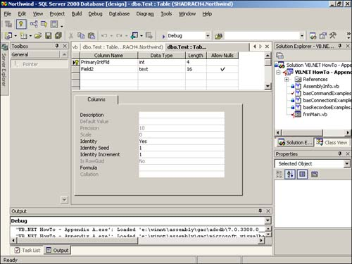

Note
If you already had the tables displayed for Northwind, you might need to right-click on the Tables node and choose Refresh. |
It is worthwhile to mention an example of creating a new table object with fields and primary key specified, even though the majority of the work of creating objects using ADO and SQL Server is done in the T-SQL Statement that you create. You will execute this statement using the Command object, as shown in Listing A.10.
Sub CreatingASQLServerObjectFromADO(ByVal txtResults As TextBox)
Dim cnn As New ADODB.Connection()
Dim cmd As New ADODB.Command()
Dim prm As ADODB.Parameter
Dim rstOld As New ADODB.Recordset()
Dim rstNew As New ADODB.Recordset()
'-- In .NET, we can assign values as we declare variables.
' This is where the hard work is.
Dim strSQL As String = "CREATE TABLE Test (PrimaryIntFld Integer
IDENTITY(1,1) PRIMARY KEY, Field2 Text)"
'-- Open the connection
OpenNorthwindADOConnection(cnn)
'-- Set up the Command object to use the SQL string.
cmd.ActiveConnection = cnn
cmd.CommandText = strSQL
cmd.CommandType = ADODB.CommandTypeEnum.adCmdText
'-- Execute the command
cmd.Execute()
End Sub
This routine is a lot like the previous example except for the SQL statement and the fact that results aren't displayed. You can see the results by going to the Visual Studio .NET Server Explorer, zeroing in on the tables for the Northwind database, and opening the new Test table in Design mode, as shown in Figure A.7.

Note
If you already had the tables displayed for Northwind, you might need to right-click on the Tables node and choose Refresh. |